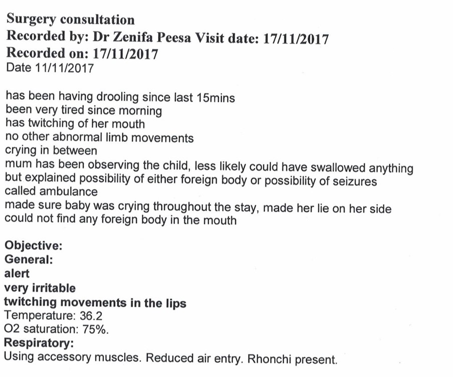
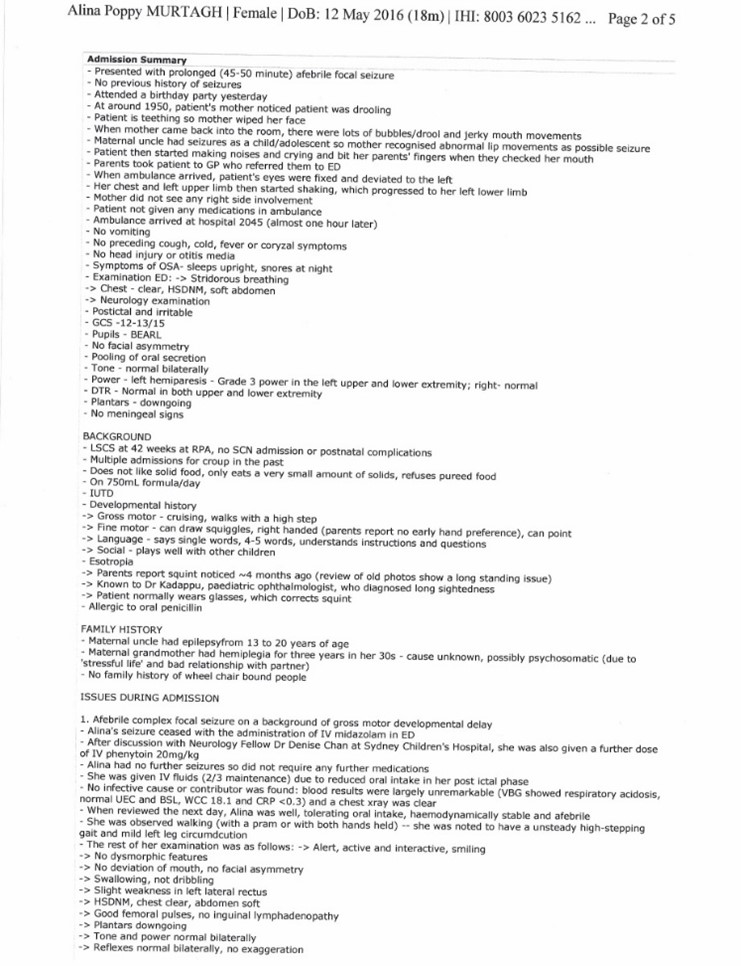
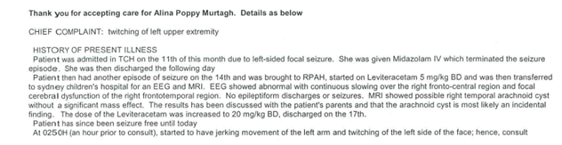
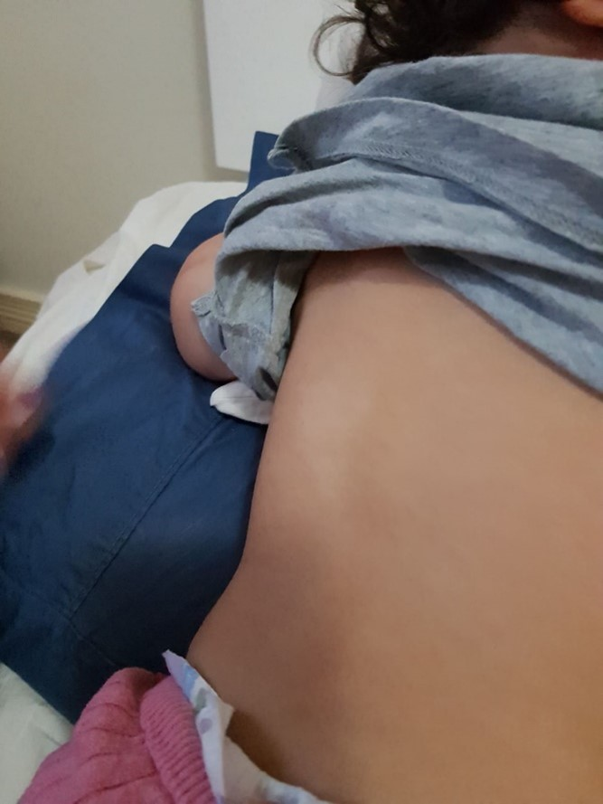
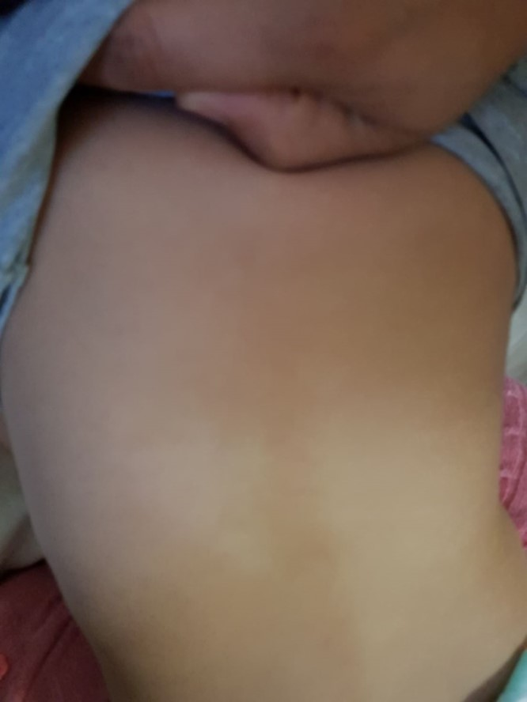
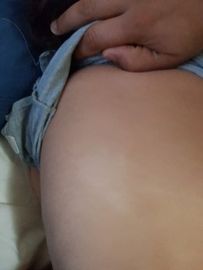
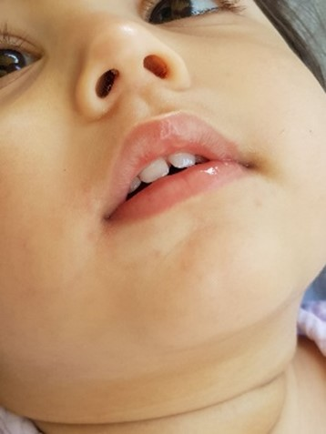
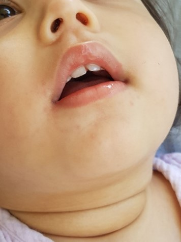
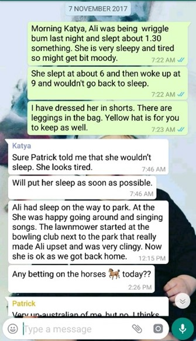

Alina's Story

November
Ali's first word was around 12 months, it caught both parents by total surprise. She pointed to her water bottle and said "paanee" (Hindi for water). She didn't repeat this.
She in particular enjoyed visiting Woolworths as she recognised many of the staff who would cuddle her while her parents shop. Its where she learnt to walk.
Gestation was particularly troublesome for mum & Alina, the mother developed hypothyroid, deteriorating vision and pre-diabetes and rested at home from 5 months. Alina was born by C-section after a difficult labour, a month after her due date. Born with a Mongolian blue spot on her bum.
The mother always had an intolerance to sugar, eating a mango or sugared product and she would develop scratchy skin and a rash across her torso. She controlled this with anti-histamines. As a result, all foods cooked in the house were made from base ingredients, and sugar was never used, not even present in the house as the parents were aware of this. Consequently, the only packaged food Alina ate was the staged baby formula, given before bed
On one occasion Alina did eat a macaroon at her 1st birthday party and developed a full body rash within hours. The parents contacted the baker and asked if there was any unusual ingredients used? Almond flavoring was the only suggestion
Alina was loved and loved life, with many videos to show this
The week following her 18 month MMR vaccine, Alina became a significantly different child, unsociable, stopped eating solids or feeding herself, she became unusually irritable, poorly and with a horrendous tonsillitis, wheeze and as mentioned previously the distinct smell on her breath became worse
The family was invited to a party the following weekend, and Alina's friends and their parents noticed how quiet she was, as typically she would mingle and play, especially enjoying and reacting to adult attention. However, being a party and a variety of foods on offer, she finally ate some solids food that week; a piece of cake
That evening, shortly after her formula bottle feed, Alina started drooling heavily, so much that mum had to change her top, she then had a seizure in her throat, which spread to her lip on her left side (the same side she had a dancing eye). She was rushed to the local GP's where the Doctor believed it may be a seizure and called the paramedics. The paramedics believed it was something trapped in her throat, as she was fully conscious, since it looked more like an irritation.
History of presenting Illness:
- Preceeding week- off her food more quiet than normal
- nil fevers/cough/cold symptoms
On Saturday morning, the family attended a baby shower and she missed her nap. She was quiet for the rest of the day. Mum describes that she had just started to go to sleep, then awoke suddenly, and started salivating significantly from the left side of her mouth, with foamy saliva. The left side of her mouth began twitching, and she began to clench her teeth.
They [the GP] called the ambulance, and the twitching commenced to the left arm and leg. It was described as rhythmical jerking, becoming gradually stronger. Her head and eyes were turned to the left, and she was not blinking or responding. After benzodiazepine administration IV at Cantebury, the event ceased (lasted 45 minutes).She was lethargic following the event, for around 45 minutes. She was discharged the following morning
 She was taken to Canterbury general hospital, where it was noticed she also had croup and was given steroids. The seizure continued in her lip and throat. Midozolam and adrenaline stopped the prolonged seizure immediately.
(Video Canterbury Hospital)It is worth noting the ++drooling and seizures in the throat and mouth, recovery with midazolam as being the predominant features of this initial “seizure” episode. Ali had HFMD aged 11 months.
Herpangina is a viral infection of the mouth which is in most cases caused by a particular strain of group A coxsackievirus, but also by group B coxsackievirus, echovirus and enterovirus 71. A common disease related to herpangina is hand, foot and mouth disease (HFMD)
- Sore throat
- Pain when swallowing
- Headache
- Sudden fever
- Neck pain
- Swollen lymph glands
- Loss of appetite
- Drooling and/or vomiting
It is common for parents to contract herpangina from children who are sick, but fortunately the disease is no more severe in adults than it is in children. However, because unborn children can be affected, it can be a matter for concern if a pregnant woman contracts herpangina
In hand, foot and mouth disease, the rash may affect
- The mouth, including the tongue, roof of the mouth, tonsils, uvula and the back of the throat
- The hands and feet
- The knees and elbows
- The buttocks and genitals
However, there are on occasions complications
Herpangina itself is generally a mild condition, but some causative microorganisms, such as enterovirus 71, may result
in severe complications, including the following:
- Brain stem encephalitis
- Acute flaccid paralysis
- Aseptic meningitis
- Myocarditis
- Some sources recommend using intravenous midazolam (0.1-0.3 mg/kg/dose)
Acute laryngeal croup is most often associated with PIV, RSV, rhinovirus, and enterovirus. Rhinovirus and enterovirus appeared equally often in croup and in wheezing illness
https://pubmed.ncbi.nlm.nih.gov/18410770/Over the next few days both parents were very cautious, in disbelief that their daughter had a seizure, since there was no history for either side of the family, (other than a maternal uncle who electrocuted himself in his teens). Alina became very lethargic and irritable. Within 3 days (on the Monday) she had another seizure and croup occurred again. Again, she was taken to Canterbury Hospital, then Royal Prince Albert, then on to Sydney Children's hospital where Dr Hugo Sampaio was assigned as her Neurologist Paediatric Specialist. Her brain MRI was shown to be clear.
The full and detailed history of Alinas illnesses was given, although without focus on any single aspect as the parents did not know the relevance but they were very thorough; repeated virus, HFMD, vomiting of blood, predominant & frequent night cough and head sweats, rashes, wheeze that occurred simultaneously with eye deviation. Post vaccine illness. Being very clear that this was a repeating & chronic virus, confirmed from a large number of visits to the GP's
Dr. Sampaio prescribed Keppra and gave his contact information, with a follow up appointment 3 months later. Many questions were asked by the neurology department; unusual birthmarks, contact with anyone returning from overseas, does she play in the park or been to the zoo even? The parents gave every answer fully.
Please now consider that the Parents to do have access to the hospital records and cannot see them, they are withheld for months+ to process, only then can you apply to view. The hospital notes are written in italic. Only medical professionals are allowed to enter details into the notes. Alongside this research, the appropriate medical papers are in boxes, with direct quotes from these papers are written with quoted bullet points.
Dr Hugo Sampaio made the following discharge notes:
nil fevers/cough/cold symptoms
Development: Rolling: 9m Sitting independently 10m Crawl: 13m Noted Stand: 14m Walking with assist: 17m
A second left sided focal seizure occurred on Monday night in a similar fashion, however mum reports she was more alert during this event. She was taken to RPA - given midazolam and phenytoin load and the seizure ended. The seizure lasted
around 1 hour.
No previous focal seizures
History revisited
Sat night- worsening drooling from left side of mouth ++, twitching of left side of mouth
Clenched teeth
left head deviation
CDA- left twitching of left arm and leg - rhythmic, as time progresses, clonus gets fasted
nil left facial clonus did not recognise family
twitching stopped straight after midazolam, sleepy for 45 minutes afterwards
Presented to Canterbury
total episode- 55 minutes
croupy cough with stridor following- given dex
- discharged 11am Sunday, well during Sunday but hyperactive
- sent to daycare on Monday - she was well
Monday night:
- had dinner, played well
- went to sleep
- midnight- heard irregular heavy breathing
- sat up, drooling again to left
-left side face arm left
- nil head deviation
- eyes twitching bilaterally
- recognised dad
- given midazolam and phenytoin load
Family history
- maternal great uncle- seizures secondary to electrocution
- Grandmother - ?seizure ?bells palsy, nil limb issues
- mum- migraines
Mum - Indian heritage
Dad- Anglo-Irish heritage
O/E
HC: 45.8cm
Weight;:
alert, vigorous social
smiling, blowing kisses
symmetrical face
HSDNM
Chest clear
abdomen soft non tender
moving all four limbs equally
No jerks/vacant staring spells
Alert, interactive, smiling
Moving all 4 limbs
Able to pincer grasp with both hands
Verbalising, following instructions
Plan:
- DC home
- Continue current dose of keppra
- Midazolam script for home
- Follow up with Dr Sampaio in January
- Mum advised to contact Dr Sampaio if further seizures - given office number
- Suggest general paediatric review - suggest Dr Joanne Leal in Stanmore
Dad concerned seizures may have coincided with timing of formula change for Alina. Nursing staff have advised Patrick to speak to neurology in regards to this. The parents have changed the formula Alina is on from S26 to Karicare
For the next month, Alina again had a persistence smell on her breath, strong left eye deviation, sweaty head and wheeze. The night coughing became worse. By coincidence, her normal formula (incorrectly documented but moving from Karicare, and given prior to bed time) was unavailable due to daigou, so another brand was used (one with a noted glucose content). She was otherwise mostly eating the same as the parents. The parents were suspicious that the formula seemed to be associated with increased wheezing & coughing
(Video IMG_9929)The parents contacted Dr Sampaio twice in this period. The first email was as follows;
….Often we were asked if she [Alina] had any birthmarks, and up until Sunday we didn't think she had. On inspection we found this on her back, left mid trunk, about the size and shape of a Dairy-Lea/ Laughing Cow processed cheese triangle. Very feint and white in colour
After asking mum -- Indian descent, she too has a large dark birthmark on her neck, that in fact until asked I just thought was a collar tan line on the back of her neck. She says its sensitive to bright sunlight and often covers it when outside
Secondly, Alina is not eating solids in any form, she's excited to see food, plays with it and puts on spoon, into mouth, but seems unable to swallow and so spits it out. This started about 3-6 days before her first seizure on the 11th Nov. Lastly she has terrible bad breath
  It is worth noting, the first seizure occurred 6 days following Alina's 18 month MMR, from that day a marked change in her personality, she became very irritable, tired, and unwilling to eat solids
3 weeks later, after a very difficult night the following symptoms appeared. Unsure to the reason, but it was in the run of play of the previous symptoms the parents had become increasingly used to, the symptoms that would strangely erupt & disappear within a couple of hours. But concerned enough, the parent contacted Dr Sampaio again via the email given with the accompanying images.
 Hi
Further to the observations, to add, Alina has developed small spots (hives?) around mouth & chin, a few on chest, backs
of knees. Images attached.
She is slightly wheezy also and when asleep she twitches quite frequently, like small body hiccups. Much more tired than
before the seizures
We saw our GP on Saturday, she observed that Alina has sore/bleeding spots on tonsils. She said she will be in contact
regarding a discharge report:
Dr.Zenifa Peesa, Victoria Tower Medical, Burwood. 8322 9099
We have reverted back to pureed food/soup which she can swallow.
Thank you again for your correspondence and your concern
best regards
Patrick
These are the very unique symptoms or red flags for an enterovirus, specifically EV71. Except it was with accompanied low temperature (sweaty head), not elevated
- Children under 5 years of age, particularly those under 2 years, are most likely to develop severe disease. Hand, foot and mouth disease (HFMD), or a history of contact with a case of HFMD, are occasional but not consistent findings in these children
- Myoclonic jerks, particularly in sleep
- Urinary retention
- Ataxia, weakness, or any focal neurological signs
- Hypertension and/or bradycardia
- Severe, unexplained or persistent tachycardia or poor perfusion
- Altered level of consciousness or excessive irritability
- Tachypnoea or any other signs of respiratory distress
- Pulmonary oedema on chest X-ray
- Myoclonic jerks are seen more often in EV71 than in other enteroviruses, and could be an early indicator of neurological involvement, particularly in the brainstem
- In addition, myoclonic jerks seen in many otherwise healthy young children, particularly when they are asleep, can occur spontaneously or be provoked by loud noises
- Grade I, myoclonic jerks, tremor or ataxia, or both; grade II, cranial nerve palsies evident from eye-movement disorders (nystagmus, strabismus, or gaze paresis), facial weakness, and bulbar palsy (dysphagia, dysarthria and dysphonia); and grade III, acute onset of intractable, frequently fatal, cardiorespiratory failure
- The viral load is frequently very low, as for poliomyelitis; for example, virus is detected in 0-5% of CSF samples from patients with neurological disease
Do note the effect of loud noises. A feature described frequently to the Neurology Doctors, regardless of how asleep she was, Alina would display “sudden jerks” when she heard certain noises, in particular car or motorbike engines (and plastic bags). It was even noticed by her care worker 5 days before her first seizure. The parents had noticed them from birth.
With the given image of the deviated eye, you could even summarise this was “stage 1 & 2” EV71
It was also in line with development and summary of all the individual components of 40 visits to the GP's of Alinas medical history i.e. it is a chronic progressive variation of EV71, and had been developing since a week after birth. This was a very clear clinical presentation in every manner except confirmation by testing (performed on RT-PCR)
Alina had a seizure 2 days later and was taken to SCH, now with a Focal EPC seizures (continuous) and the MRI showed brainstem inflammation
Discussed with Prof Edwin Kirk. At this stage Alina's presentation would not appear to be metabolic in nature … However, Dr Sampaio's question of whether this could be POLG or mitochondrial cannot be completely excluded at this time
Sitting ~9months but unsteady, sitting unsupported and well by 12 months
Mum also noted was delayed in her motor milestones compared to other children in the mother's group
Croup/stridor aged 17m and ongoing cough for most of the last year (now resolved)
Development:
Rolling: 9m
Sitting independantly 10m
Crawl: 13m
Noted Stand: 14m
Walking withth assist: 17m
(the milestones were misquoted, neglecting the fact Alina was born a month behind the mothers group. Alina otherwise reached her milestones exactly the same age as the mothers group, sitting independently by Christmas (7 months), crawling by 10 months. All except walking, which was consistent with both parents - dad at 18 months, mum at 22 months. However there are frequent misreporting of the symptoms the parents discussed with the medical staff. (E.g. the cough was not resolved, it was progressing)
29/11
Neuro believe meds will not affect her current fitting and she would continue to fit regardless of antiepileptics.
MRI : Normal
MRI normal
MRS normal
CSF lactate normal
i.e. this was not indicative of a Genetic related illness